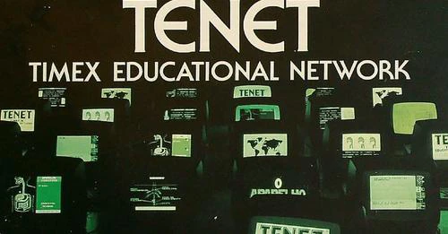

In this session, Hugo Pinto, from the LOAD ZX Museum's team, will present the archeological journey in bringing back to functional status an 8 bit networking system built by TIMEX Portugal for the ZX Spectrum and compatible computers in 1986. Hugo and the team will explain the system's internals on a deep dive, and demonstrate it live on stage using distributed games and applications. An unmissable talk for the hardcore 8-bit enthusiast!